Interface, saving settings and automation
In short: interface and preview settings, the processing flowchart, saving and restoring settings, and running AutoIntegrate in automated ways.
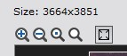
AutoIntegrate includes image preview functionality. It is possible to see a stretched image by clicking through the file list files. Image preview is shown in a preview window that is part of the script dialog. The image in the preview window can be zoomed and moved.
Files in the file list have a checked flag. Using image preview functionality bad files can be unchecked. Only checked files are used for processing.
Image preview window is also used to show image files during different steps of processing.
By default linear images are shown stretched with AutoSTF in the preview. Option AutoSTF during processing controls stretching of preview images during processing and option AutoSTF when browsing controls stretching when browsing files in the Files tab. Both options are in the Interface / Interface settings section. The blink window is always stretched.
Preview window can be disabled in the Interface / Interface settings section. Also preview window size can be changed there.
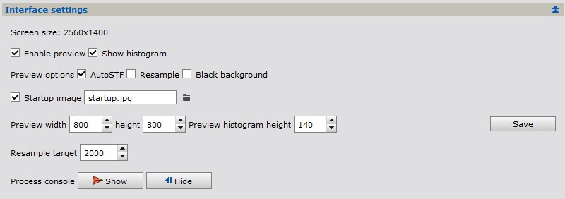
Image preview settings in Interface settings section
By default the image histogram is displayed below the image. Histogram is updated when the image is changed. Clicking the histogram shows some statistics. Default size for histogram is calculated automatically. Size can be adjusted in the Interface / Interface settings section and the histogram display can be disabled in the Interface / Interface settings section.
If the image is linear (not stretched) then the histogram is shown using a logarithmic scale. A text Log is shown in the histogram window. If the image is stretched then the histogram uses linear scale and text Norm is shown.
Both dialog and preview window can be maximized to (almost) full screen. This is useful when using a small screen or otherwise when a bigger view of the image is needed.
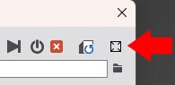
Full screen dialog button.
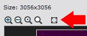
Full screen image preview button.
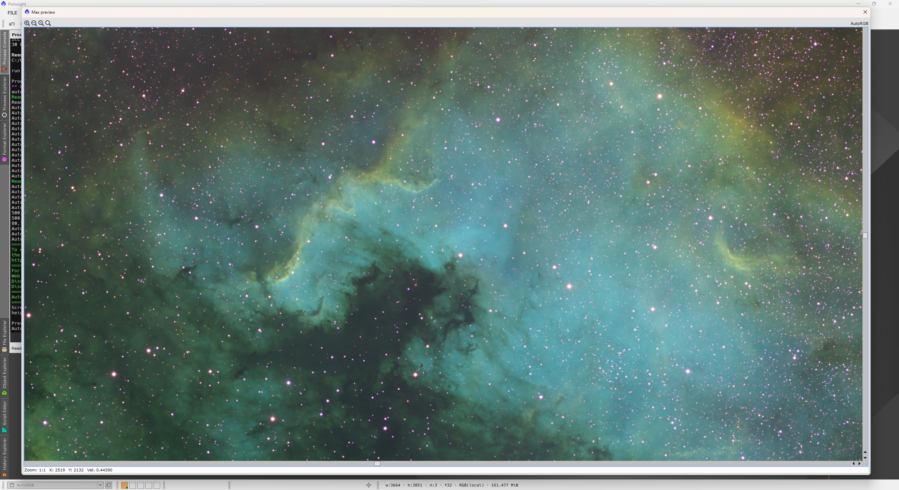
Full screen image preview.
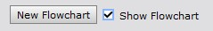
Using the New Flowchart button the script will generate a flowchart of the processing workflow. Flowchart uses the current settings and images. A partially simulated minimal workflow is run to generate the flowchart information. To run the simulated workflow all relevant files must be loaded to the Files tab. A graphical version of the flowchart is printed to the preview window and a text version is printed to the process console.
Full Flowchart is available after processing. It is saved to the AutosaveSetup file and also to the setup file when available so it can be loaded later. A text version of flowchart is also printed to the AutoIntegrate log file.
Note that with a preview save button is it possible to save the flowchart image to a file.
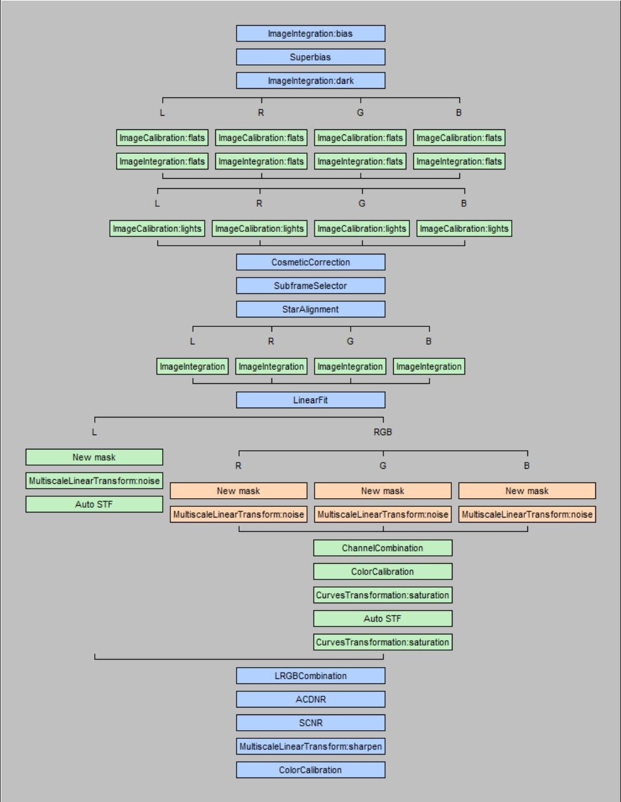
Flowchart information is always generated during processing. It can viewed using Show Flowchart checkbox. During processing Flowchart is updated after each step. By checking and unchecking the Show Flowchart checkbox it is possible to switch between the current preview image and flowchart. Flowchart also shows processing time for each step.
Flowchart settings are in the Interface tab. Note that Flowchart settings are saved to persistent module settings but values are not reset with the Set default values button.
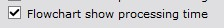
By default Flowchart settings option Flowchart show processing time is selected. This options shows the processing time for each step in the flowchart. If this option is not selected then only the flowchart data is shown.
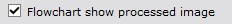
By default Flowchart settings option Flowchart show processed image is selected. This options shows the processed image in the preview window and the flowchart data is shown on top of the image. If this option is not selected then only the flowchart data is shown.
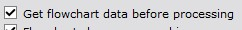
If Flowchart settings option Get flowchart data before processing is selected then flowchart data is collected before processing. This is useful if you want to see the full flowchart during processing. Note that this option is not selected by default. Full flowchart is not available with AutoContinue or batch processing.
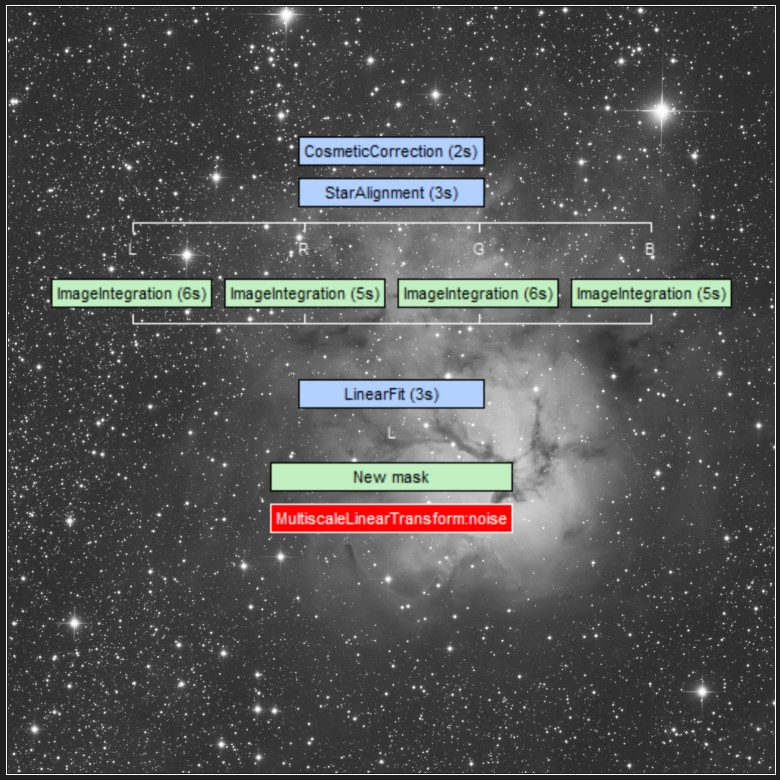
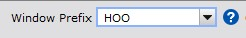
It is possible to give the user specified prefix to image window names. This makes all generated window names unique and allows results from multiple processing runs to be open at the same time. These images are also iconized at different columns on the screen.
By default the icon column for a new window prefix is automatically managed by the script. Script tries to track used icon column positions and assign free ones for new runs.
Sometimes, like when using multiple workspaces, this automatic management does not work optimally. In that case it is possible to manually set the icon column for a window prefix. This can be enabled by setting option Manual icon column control. The change will be effective when restarting the script.
When manual icon control is enabled there is a new control Icon column. With that control it is possible to manually set the column where icons are placed. The default for the Icon column is Auto where the icon column is chosen automatically. The last icon column is remembered and automatically restored when the script starts.
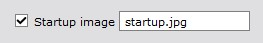
A startup image is shown in the preview window when the script starts. This startup image can be changed to a user selected image in the Interface / Interface settings section. The startup image can also be disabled there.
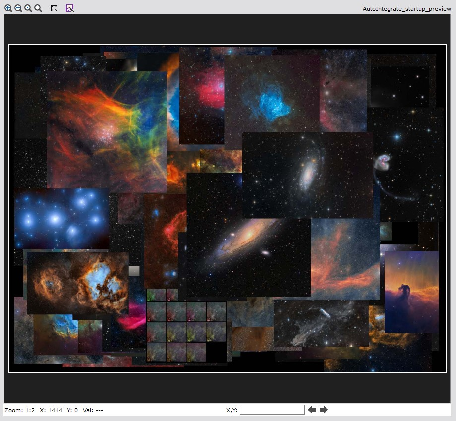
It is possible to save all settings into PixInsight persistent module settings. These settings are automatically restored on startup.
All saved parameters, persistent module settings, process icon and setup file, will include only those values that are different from default values.
There is also a button to reset all parameters to default values.
Preferences in the Preferences box in the Interface / Interface settings section, like preview size, histogram and startup image, are handled separately. They are saved automatically when the script exits, or with the Save button in the box. They are not reset to default values with other parameters. Other options in the Interface tab, like preview AutoSTF and resample options, are normal parameters that are saved with the wrench button.
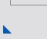
It is possible to save your own default options to a script icon. It can then be used to recall default settings. Script icons can be saved to a file.
Parameter values are first restored from persistent module settings and then from the process icon. So process icon settings overwrite persistent module settings.
Settings are saved by dragging the lower left corner triangle icon to the desktop. By double clicking the icon a script window opens. Clicking the Apply global button starts the script with those settings that are saved to the icon. PixInsight also saves MD5 checksum to the script icon. When using the script icon with a modified script you need to clear the checksum field first.
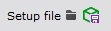
Current parameter settings and image file lists loaded into light and calibrate image pages can be saved to a setup file. That file can later be restored to AutoIntegrate. Saved file keeps checked/unchecked status for files. The file must have a .json extension.
File paths that are in a subdirectory of the setup file are saved as relative paths. This makes it possible to move or share setup and images files and it still works in a new location. Relative paths are automatically restored as full paths.
Setup file saves only those parameters that have a non-default value. It is good to note that other parameters settings are not changed when restoring the setup. There is an option Reset to use only those settings that are loaded from the setup file. Other parameters are reset to defaults.
Also window prefix and output directory are saved to a setup file.
When available the setup Json file includes ssweight values for files.
AutoIntegrate Json file format is described here: AutoIntegrate_JSON_Format.html
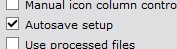
Option Autosave setup saves current setup automatically after successful processing into AutosaveSetup.json file. Autosave is done only after the Run command, it is not done after the AutoContinue command. Starting from version 1.65, Autosave setup is enabled by default.
The file is saved to the default output directory. This makes it possible to use relative paths to files so it is easy to move the setup file around or even share with lights files.
Setup can be later loaded into AutoIntegrate to see the settings or run the setup again possibly with different options. If the option Add window prefix to log files is selected the current prefix is added to the autosave setup file.
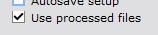
Option Use processed files tries to use already processed files when possible. This option can be useful when adding files to an already processed set of files. Only files generated before image integration are reused.
Option works best with setup file that is saved after processing or with Autosave setup generated AutosaveSetup.json file because then star alignment reference image and possible defect info is saved.
With image calibration it is possible to use previously generated master files by loading already processed master files info calibration file lists. If only one calibration file is present then the script automatically uses it as a master file.
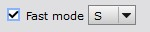
For faster processing for example when checking out some options or narrowband palettes it is possible to use the Fast mode option. Fast mode is enabled on the Settings / Other section. Fast mode reduces the number of images processed and uses binning to reduce image size.
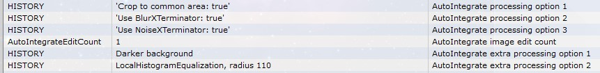
AutoIntegrate automatically embeds processing history into image metadata as FITS keywords. This helps to see how the image was processed. Processing history is saved using the HISTORY keywords.
Non-default processing options are saved after the base processing is run. With enhancements processing the processing option name with possible parameters are saved to the image metadata.
Processing history can be viewed using PixInsight File/FITS header selection.
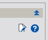
It is also possible to view the processing history by loading the image as a target image in the AutoIntegrate script Enhancements tab. Then the processing history is printed to the process console using the AutoIntegrate processing history button.
When script runs a full processing it always generates an ExecutedProcesses.xpsm file. It can be loaded into PixInsight desktop as process icons to see the exact processes and settings that were used during processing.
Process icons can also be used to manually run the same processing again, maybe with some fine tuning. Process icons include file lists so the same files as used as during automatic processing.
You can load process icons to the PixInsight desktop using Process / Process Icons / Load Process Icons... menu command. If you already have some process icons loaded to the desktop you can append new icons by using the Process / Process Icons / Merge Process Icons... menu command.
Process icons file ExecutedProcesses.xpsm is created to the processing root directory.
Some processing steps may not generate process icons. Below are some steps that do not have a process icon.
Iterative stretch methods that do not generate process icons are listed below:
Some considerations if you plan to run manual processing using process icons:
Below is an example of process icons created by AutoIntegrate script and loaded into the PixInsight desktop.
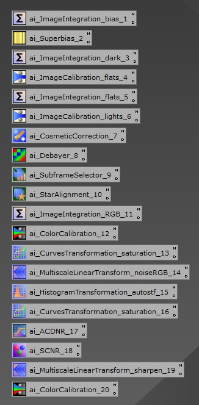
When script runs a full processing it always generates an AstrobinInfo.csv file. It can be used in Astrobin to describe the imaging session. Astrobin filter numbers must be configured in the Other / Astrobin section. AstrobinInfo.csv is created in the AutoProcessed directory.
You can fully automate AutoIntegrate by launching PixInsight with a script, executing your JSON-defined workflows, and then exiting, no manual interaction required.
You can start the AutoIntegrate script from the command line using the --run="path-to-script[,argument,argument,...]>" option.
AutoIntegrate accepts the following arguments:
runsetup=filename.json - Specifies the path to an AutoIntegrate JSON setup file. This file contains all the settings and file lists needed for processing.do_not_read_settings - Prevents AutoIntegrate from loading any saved settings, ensuring a clean run based solely on the provided JSON file.do_not_write_settings - Prevents AutoIntegrate from saving any settings after the script completes.Using the PixInsight command line option --force-exit you can exit PixInsight after the script finishes executing.
Example command line to run AutoIntegrate script:
"path/PixInsight.exe" --run="path/AutoIntegrate.js,runsetup=MyProcessing.json,do_not_read_settings" --force-exitAutoIntegrate Json file format is described here: AutoIntegrate_JSON_Format.html
With this setup, you can batch-process any number of AutoIntegrate JSON workflows unattended — ideal for nightly runs, CI pipelines, or large-scale reprocessing.
AutoIntegrate processing engine is separated from AutoIntegrate GUI so the engine can be called without the GUI. This makes it possible to create own interfaces to AutoIntegrate engine.
A sample to show how to call AutoIntegrate engine from a PixInsight script is in the following link: TestCalibrate.js